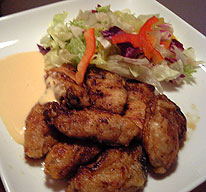
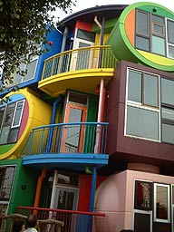
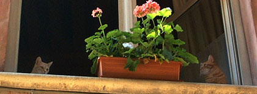

◀ 新しい記事
17 / 64
古い記事 ▶
■2005/11/23/(Wed)21:42
最近レシピ

えーと、これは牡蠣の中華風ピカタ。
適当に加熱用牡蠣に塩コショウして、紹興酒でもみもみして、小麦粉つけてフライパンで焼きます。
ソースは適当にマヨネーズとケチャップをまぜて、紹興酒と砂糖少々をまぜまぜ。
ヘタな牡蠣フライより好きです。
牡蠣殻があれば牡蠣殻にサラダ用にきざんだ野菜を敷いてピカタを乗っけてソースをかければ、そこそこ見栄えします。
■2005/11/15/(Tue)22:18
みたか

週末、三鷹天命反転住宅の内覧会に行ってまいりました。
まー目立つ目立つ。
新築のせいなのか、街にまだ馴染んでない。…ってなかなかこの雰囲気では馴染むのも難しそうだけど…。フンデルトヴァッサーハウスの突飛だけれども街にしっくり馴染んでいる佇まいを見ているせいかしらん？
室内は噂に違わず、平らなトコがないー
リビングで唯一の平らなトコは「冷蔵庫置き場」
床はぼこぼこ。一部屋は球形で、床も窪んでる。
収納が無いので、天井にはフックがたくさん打ち付けてあって、そこに網だの縄だのがぶら下がってそこにモノを括りつけたり、乗っけたりするもよう。
お風呂は…シャワーのみ！トイレ扉なし！超絶的な工夫が必要な家。
頭も身体も使わないと、使いこなせない住宅ってかんじ。
好きな人はたまんないんだろうけど、賛否両論だろーなー…
うーん。ホントーにこの部屋に住めば天命反転するのだろーか？
身体を使う死なない住宅。
8000万〜9000万とゆー価格にも関わらず、御成約も何軒か！
住宅じゃなくて、カフェとかバーとかなら面白そうなんだけど、荒川修作氏曰く、実際に住居として生活をしてもらいたいらしい。そんな荒川修作氏もこの内覧会に顔を出していたんだけど、みんなが囲ってしまっててあんまし話しを聞けなかった。
（余談だが荒川氏はバスで来たらしい。もーじき70近いのに見た目若いし、天命反転を実践してるなーと）
■2005/10/29/(Sat)00:15
こねこものがたり

裏ルート通勤をしはじめて2ヶ月近くたつのかしらん？
この道の何が楽しいって猫が多いのがたまんない。
高架下にホームレスのおじちゃんと野良にゃんが生活してて、この道を通るようになったころ、野良にゃんが子猫にゃんを産んだのでした。
こーれが、日に日に大きくなっていくのがたまらんのです。
生まれたころは、ママにゃんも警戒してホームレスのおじちゃんが餌を持っていっても「ゥフ〜！！！！！！！！！」ってうなっていて、「じぇんじぇん懐いてくれないのヨ〜」とおじちゃんはしょげていたのでした。
でも。
台風なんどか過ぎさって、おじちゃんは台風から、にゃん一家を守るために色々トロ箱で家を作ってあげたりなんだりしてたのでした。
台風過ぎて…
日増しに大きくなってく子にゃんこは、その台風のおかげかどーかしらんけど、じょじょにおじさんに懐くよーになったのでした。
で、今日。
おじさん、子にゃんこ抱っこしてました。「うわー！おじさん仲良くなったんだねぇ〜！」
ちょっと無理やり抱っこしてるよーな感じでもあったけど、ナデナデさせてもらいました。ふわふわ。
「コナイダねー。このコ、風邪引いちゃって、死にそーだったんだヨ〜」と。
おじさんこそ風邪引かないよーに気をつけなきゃー…と言おうと思ったけど…
なぜかここのおじさんたち、優雅な生活で、ホームレスハウス（？）には立派なアンテナが立ってテレビを見てたりしてるし、真夏はエアコン運んでいるのを見たんだよね……バッテリーで動かせるものなの？？
まー子にゃんこが幸せならいいんだけどね。
■2005/10/20/(Thu)00:01
探偵ナイトスクープ
探偵ナイトスクープ
が千葉テレビで見られるよーになったー。
テレ朝で見られなくなっていたので嬉しいわー。
しかし、なぜに関東ではこんなに人気がないのかなー。
■2005/10/18/(Tue)22:05
いろいろあるが
揉め事も多い2ちゃんだが
ヘタな散文を読むよりも夢中にさせるスレッドもあるわけで。
お前ら！生きろ！死ぬ気で生きてくれ！
やれること、やりたいこと、自分のためは、人のため。
幸せになるにはまず生きること。
■2005/10/14/(Fri)21:52
安売り
近所のスーパーでワインのワゴンセールが。
「ワゴン内全品498円！800円〜3,000円の品！」
ワインを勉強しておいて良かったなーと。
3,000円の品だけ選んできました。
…とはいえ試験以来、ぜんぜん勉強してないので、
すさまじい勢いで覚えたことを忘れています。
このままだと、来年の二次試験のときにはオールリセット状態です。
■2005/10/13/(Thu)22:04
3
◀ 新しい記事
17 / 64
古い記事 ▶